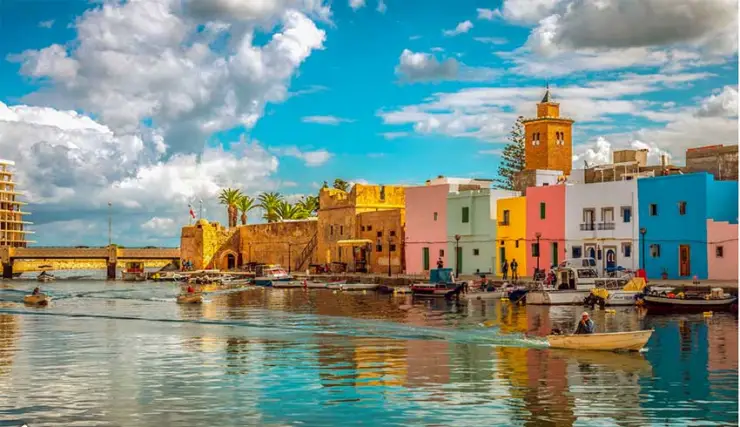
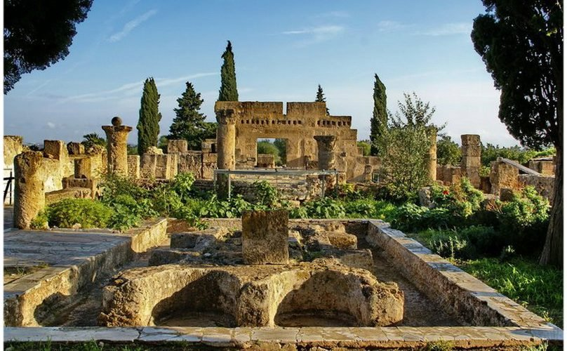

Marina is one of the oldest sites in Bizerte, the northernmost city in Africa. It is located in the north of the country, between the Mediterranean Sea and the lake from which it gets its name, about 65 km north of Tunis, the capital. Cap Blanc, the northern tip of Africa, is 5 km north.
Marina

Archaeological Sites

Utique is said to be one of the first Phoenician trading posts established in Africa, probably around 1100 BC. Older than Carthage, Utique long served as the capital before being overshadowed by its neighbor, founded at the end of the 9th century BC and quickly gaining power. Associated with the fate of its neighbor, the city experienced both prosperous and dark times. However, during the decisive confrontation between Carthage and Rome, Utique aligned with the right side, earning it the privilege of becoming, for 130 years, the capital of Africa in 146 BC. Later, like many ancient cities in Tunisia, it faced diverse fortunes, culminating in a definitive decline in the 7th century. Today, the modest Utique archaeological site, 12 km from the sea due to delta siltation, features some visible buildings, including the "House of the Cascade," other houses, temples, a forum, baths, and traces of theaters, circuses, and amphitheaters. Less spectacular but perhaps more significant is the underground level, which revealed a Punic necropolis with burials dating back to the 7th century BC, offering insights into the beliefs and lifestyle of the time.
Activities
Cycling
Cycling is a pleasant way to relax, enjoying nature, landscapes, and physical exercise.
Fishing
Fishing is a way to return to nature, decompress, and escape the city's hustle. It can become a meditative experience.
Sunbathing
What could be more enjoyable than relaxing by the pool or on the beach, soaking up the sun to rest, read, and tan?
Sea Trip
Breathe in the fresh sea air of Tunisia! You'll enjoy a delightful sense of freedom throughout the trip. Set sail!
Swimming
Tunisia has many beautiful beaches. Swimming is a fun and energizing activity that allows you to release a lot of energy.
Camping
Whether it's raining, windy, or freezing, if you love camping, embark on our exciting summer and winter camping adventures.
Pirate Boat
Raise the anchor and board a pirate ship for a sea trip, admiring the most beautiful landscapes of our coasts and sandy beaches.
Campfire
As night falls, there's nothing like an evening around a campfire to warm up, cook, and enjoy pleasant moments.
Cap Zbib

Cap Zbib is a cape located near the town of Metline, in northern Tunisia. On June 23, 2017, maritime guards thwarted an illegal immigration attempt to Italy here. After several drownings on undeveloped beaches, swimming was prohibited on the rocky beaches of the cape on July 6, 2017.
Activities
Climbing
Do you love taking on new challenges? With a bit of adrenaline? Then climbing is definitely a sport for you.
Fishing
Fishing is a way to return to nature, decompress, and escape the city's hustle. It can become a meditative experience.
Sunbathing
What could be more enjoyable than relaxing by the pool or on the beach, soaking up the sun to rest, read, and tan?
Sea Trip
Breathe in the fresh sea air of Tunisia! You'll enjoy a delightful sense of freedom throughout the trip. Set sail!
Swimming
Tunisia has many beautiful beaches. Swimming is a fun and energizing activity that allows you to release a lot of energy.
Camping
Whether it's raining, windy, or freezing, if you love camping, embark on our exciting summer and winter camping adventures.
Pirate Boat
Raise the anchor and board a pirate ship for a sea trip, admiring the most beautiful landscapes of our coasts and sandy beaches.
Campfire
As night falls, there's nothing like an evening around a campfire to warm up, cook, and enjoy pleasant moments.